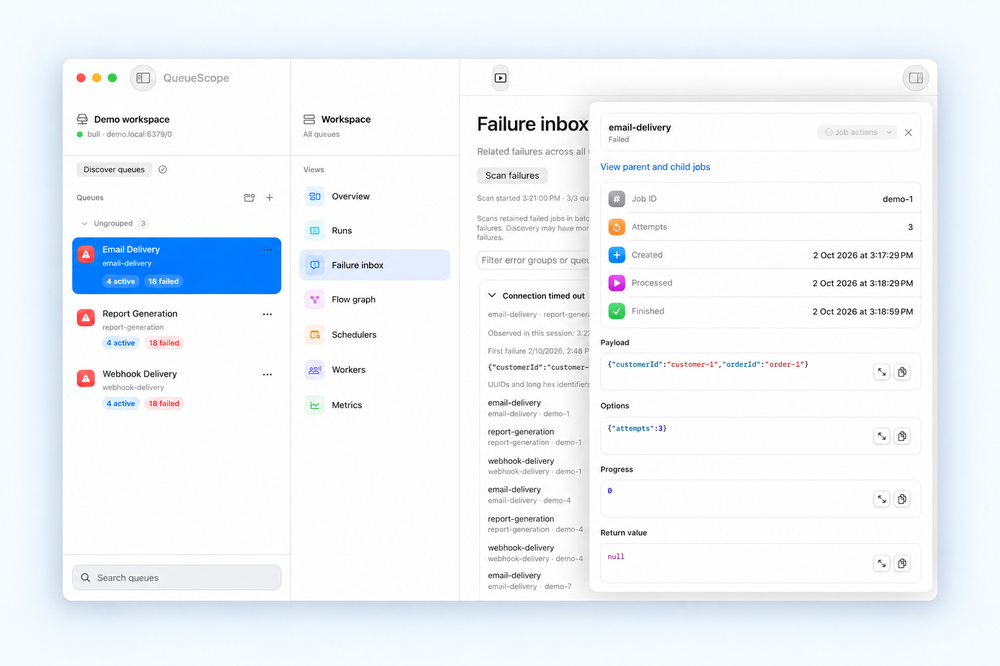

How to inspect failed BullMQ jobs
A failed-job count tells you something went wrong. The useful answer is which jobs share a cause, what changed, and whether retrying will help.

1. Establish the scope
Confirm the Redis database, queue prefix, and environment before investigating. Start with a read-only profile in QueueScope. Pick the affected queue and open Failure inbox. Switch to all queues only when you need to investigate a pattern across the connection.
The inbox scans retained failures in batches. Check its coverage and scan timestamps before interpreting the count. Jobs removed by your retention settings will not appear, and the current queue can change while a scan is running. A scan is a view of retained data, not a lifetime failure total.
2. Group errors before opening individual jobs
Look for repeated failure text. A provider rate limit across several queues suggests a different investigation from a missing field on a single payload. Open a representative job from the error group, and compare another job from that group to check whether the same explanation fits.
3. Inspect the job evidence
Read the failure reason and stack trace alongside the payload, options, attempts, and timestamps. For a validation error, compare the input with the processor's expected shape. For a timeout, correlate its timestamp with worker and downstream-service logs. QueueScope shows retained job data; worker logs and provider diagnostics still matter.
A job can fail because its processor throws, or because it exceeds the allowed stalled count. A job that remains waiting is a different case: check workers, queue pause state, and scheduling instead of assuming a processor exception.
4. Decide whether retrying is useful
Fix the cause first. Invalid input will usually fail again; a temporary service failure may recover. Check whether processing the same job again could repeat an external side effect, such as sending a message or charging a customer.
On a writable connection, inspect the eligible job actions and retry a specific failed job when appropriate. For automatic retries, configure attempts and backoff in your producer code. Without configured backoff, BullMQ retries can happen without a delay.
5. Check what happened next
Refresh the queue after the retry and inspect the resulting state. A successful retry request does not mean the processor completed successfully. If a workflow is still blocked, inspect its dependencies in the flow graph.
Continue with connecting to private Redis through SSH, or read the official BullMQ retry guide and flow documentation.